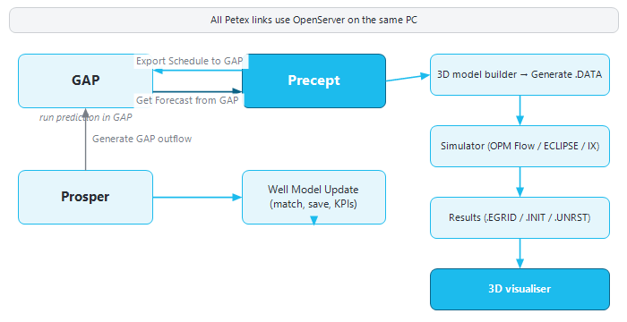

|
Links with Petex GAP, Prosper and reservoir simulators
1. Overview
Precept has its own network solver, well models and material balance, so none of the tools below is required to build a forecast. When your team already maintains Petroleum Experts (Petex) models or reservoir simulation models, Precept can work with them:
•GAP — Precept prepares the GAP prediction schedule from a scenario ("Export Schedule to GAP") and reads the GAP prediction results back as the scenario's forecast ("Get Forecast from GAP"). Used this way, Precept acts as a pre- and post-processor for GAP.
•Prosper — the "Well Model Update" window matches and updates the Prosper well models against well tests, and prepares their lift-curve sensitivities for GAP.
•Reservoir simulators — the 3D model builder writes a simulation deck (ECLIPSE format), including a SCHEDULE section built from the scenario, and the results can be viewed in the 3D visualiser.

Figure 1 — Data exchanged between Precept, GAP, Prosper and a reservoir simulator.
2. Before you start
2.1 Show the ribbon groups
The "GAP" and "3D Modelling" groups of the main ribbon are hidden by default. To show them for a scenario:
1.Click "Settings" on the main ribbon.
2.Under "Pre / Post Processing", tick "Pre/Post processor for GAP" to show the "GAP" group, and/or "3D Simulation model" to show the "3D Modelling" group. With "3D Simulation model", also choose the simulator the deck is written for: "ECLIPSE 100", "ECLIPSE 300" or "Intersect IX".
3.Click "Save Settings".
The GAP buttons become active once a scenario is loaded. See Settings.
2.2 Petex prerequisites
•GAP and/or Prosper must be installed on the same computer as Precept, with a licence that includes OpenServer. Precept drives them through OpenServer.
•For the GAP buttons, open the GAP model in GAP first. Otherwise Precept stops with "You need to open the GAP model !".
•The location of the asset's Prosper well models is configured for the asset by your administrator. When the "Well Model Update" window opens, Precept starts Prosper if it is not already running. If it cannot reach Prosper, it reports "Precept cannot connect to Petroleum Experts software !".
•When Precept connects, it closes any other OpenServer session running on the computer (for example an Excel macro). Let other OpenServer work finish first.
3. The "GAP" group
|
Button
|
What it does
|
|
"Update Well model"
|
Opens the "Well Model Update" window (section 5). From this button, Precept first checks that GAP is running, unless the asset's Prosper models are kept in a folder configured by your administrator.
|
|
"Export Schedule to GAP"
|
Writes the scenario's events into the prediction schedule of the GAP model that is open: constraint changes, shutdowns, wells coming on stream, and choke, separator-pressure and downtime changes, node by node. The prediction start and end are set to the scenario's forecast dates. If the field has already produced, a restart prediction is set up. Otherwise the GAP schedule and constraints are reset first. A progress bar shows "Exporting schedule to GAP...".
|
|
"Get Forecast from GAP"
|
Reads the results of the GAP prediction back into Precept as the scenario's forecast (section 4).
|
4. Using Precept as a GAP pre/post-processor
1.Build the scenario in Precept: sequence, opportunities, shutdowns and constraints vs time.
2.Open the GAP model in GAP.
3.Click "Export Schedule to GAP".
4.In GAP, run the prediction.
5.Back in Precept, click "Get Forecast from GAP". Precept first compares its time steps with GAP's ("Verifying timesteps..."). If GAP has no prediction results yet, it says "You need to run GAP prediction.".
6.When the import finishes, Precept shows "GAP results succesfully imported". If OpenServer reported problems, they are listed in a table.
What "Get Forecast from GAP" changes in the scenario:
•The forecast results are those computed by GAP.
•The wells' decline curves are replaced by profiles taken from the GAP results (multi-segment profiles versus time, Mid case).
•If GAP and Precept do not have the same time steps, Precept warns "Precept and GAP have different timesteps. GAP time steps will be used to get data.". It then deletes the scenario's shutdowns and new profiles, and replaces them with the constraints and schedule events read from the GAP model.
Tip: these changes cannot be undone. Duplicate the scenario before importing from GAP if you want to keep the Precept version.
5. Prosper — the "Well Model Update" window
The "Well Model Update" window opens from "Update Well model" in the "GAP" group, from Production monitoring (directly on the monitored well), and from other well windows. It shows the well's VLP/IPR ("SYSTEM CALCULATIONS") and its well tests. With Prosper models, the calculations are done by Prosper; without them, by Precept's native well model. Typical use with Prosper:
1.Select the well. Only the producers of the asset model are listed.
2.In the well-test table, click the test to match ("click on the Well Test you want to load for Prosper matching").
3.Click "Match VLP". Prosper's gradient matching is run against the test's downhole-gauge pressure, and the new F1/F2 factors are shown. A test without a gauge BHP cannot be matched ("BHP cannot be matched as there is no actual BHP value from downhole gauge.").
4.Click "Save Prosper model". The Prosper file is saved and the updated parameters are recorded in Precept; see "Prosper model updates history".
5."Calculate KPIs" or "Calculate KPIs for all wells" updates the well KPIs.
6."Generate GAP outflow" writes standard lift-curve sensitivities (THP, water cut and, for gas-lifted wells, gas-lift rate) into the Prosper model and saves it. Then generate the VLPs in GAP, as the message says: "VLP sensitivities entered in Prosper model, now please generate the VLP in GAP !".
The well-surveillance side of this window is described in Monitoring.
6. Reservoir simulators — the "3D Modelling" group
|
Button
|
What it does
|
|
"3D model builder"
|
Opens the deck builder for the selected scenario. It builds a simulation deck (.DATA, ECLIPSE format) for the simulator chosen in Settings. Its SCHEDULE section is generated from Precept's own editors: well placement (COMPDAT), VLP files, "Well control" (opens the "Eclipse Wells Control" window), "Shutdowns", "Constraints vs time" and "Conversions / new profiles". The schedule is written into the deck when you click "Generate .DATA".
|
|
"3D model visualization"
|
Opens the scenario's latest simulation results in the
|
3D visualiser
|
.
|
The deck builder, running the simulation, and coupling the network forecast with a simulator (the "Simulation" choice of the "Decline" setting) are described in Simulation and Material Balance.
|